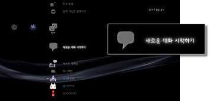
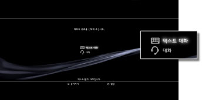
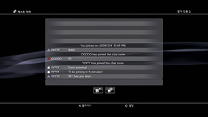

텍스트 대화 시작/종료하기
이 기능을 사용하려면 시스템 소프트웨어를 업데이트해야 하는 경우가 있습니다.
친구 리스트에 등록한 상대와 텍스트 대화를 할 수 있습니다.
텍스트 대화 시작하기
1. |
|
|---|---|
|
 |
|
2. |
|
|
 |
|
3. |
텍스트 대화방 이름을 입력하고 [확인]을 선택합니다. |
4. |
대화에 초대할 친구를 선택한 후 [확인]을 선택합니다. |
|
 |
 (새로운 대화 시작하기)를 선택합니다.
(새로운 대화 시작하기)를 선택합니다. (텍스트 대화)를 선택합니다.
(텍스트 대화)를 선택합니다.알아두기
- PlayStation®Network에 로그인해 두어야 합니다.
- 텍스트 대화에서는 대화를 위한 초대 메시지가 송신되지 않습니다.
- 텍스트 대화방에는 최대 16명까지 참가할 수 있습니다.
- PlayStation®Network의 계정 설정에서 대화의 이용이 제한되어 있는 경우에는 텍스트 대화를 이용할 수 없습니다. 사용연령제한 기능에 대한 상세한 사항은 [XMB™에 대하여] > [사용연령제한 기능 사용하기]를 참조해 주십시오.
대화방에 참가하기
텍스트 대화에 초대되면 화면 우측 상단에 알림 메시지가 표시됩니다.  (친구)의
(친구)의  (텍스트 대화방)을 선택한 후 참가할 대화방을 선택합니다.
(텍스트 대화방)을 선택한 후 참가할 대화방을 선택합니다.
알아두기
 (설정) >
(설정) >  (시스템 설정) > [알림 메시지]에서 [표시하지 않음]으로 설정하면 알림 메시지가 표시되지 않습니다.
(시스템 설정) > [알림 메시지]에서 [표시하지 않음]으로 설정하면 알림 메시지가 표시되지 않습니다.- 일부 게임의 경우 게임 플레이 중에 텍스트 대화에 참가할 수 있습니다. 무선 컨트롤러의 PS 버튼을 눌러 (친구) > (텍스트 대화방)에서 참가할 대화방을 선택합니다. PS 버튼을 누르면 게임 화면으로 돌아갑니다.
- 동시에 세 개의 대화방에 참가할 수 있습니다.
- (텍스트 대화방)에는 대화방이 20개까지 표시됩니다. 20개 이상의 대화방이 있는 경우, 새로운 대화방이 열리면 오래된 대화방이 자동으로 지워집니다.
대화방에서 나가기
텍스트 대화 화면에서  버튼을 눌러 대화방을 닫습니다. 나가고자 하는 대화방을 선택한 후
버튼을 눌러 대화방을 닫습니다. 나가고자 하는 대화방을 선택한 후  버튼을 눌러 옵션 메뉴에서 [나가기]를 선택합니다.
버튼을 눌러 옵션 메뉴에서 [나가기]를 선택합니다.
알아두기
PS3™의 전원을 끄거나 PlayStation®Network에서 로그아웃하면 자동으로 대화방을 나가게 됩니다. 대화방을 나간 후 다시 대화방에 참가하면 대화방을 나가 있던 동안의 대화 기록은 표시되지 않습니다.
대화방 삭제하기
삭제할 대화방을 선택한 후 버튼을 눌러 옵션 메뉴에서 [삭제]를 선택합니다.
제어판 사용하기
화면상의 제어판에서 다음의 조작을 할 수 있습니다.
 |
친구 초대하기 | 텍스트 대화방에 친구를 초대합니다. |
|---|---|---|
 |
참가자 목록 | 텍스트 대화 참가자의 목록을 표시합니다. |